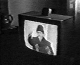

- political -
|  |
As you order, each item will be listed in Your Shopping Cart in the upper left corner. As you order, each item will be listed in Your Shopping Cart in the upper left corner. My email address isView all newsletters Video Search Results We found 81 available videos where the Category is Political Documentary. .. |
The Existentialist Page The Conservative Library - From Conservatives at USC American Renaissance - A Conservative Center Resources on Antonio Gramsci Russell Kirk Home Page Mr. . - From Ourworld Libertarianism and Anarchism - From the University of Pittsburg An Alternative Guide to the WWW-Galaxy A Fine Collection of Radical and Other Links The Rational Anarchist HomePage Anarchy for Anybody Spunk Press - An Anarchist Outlet Menu Documentary Materials Go To This Site's Documents Page Alfred Rosenberg Materials The Labyrinth - Rich in Medieval Materials The Getty Institute The Political Philosophy Reading Room St. Thomas' Summa Theologica Political Science Manuscripts Democracy in America - From the University of Virginia Political Theory USENET Group The University of Virginia Electronic Text Center UC Berkeley Digital Library SunSITE Menu Miscellaneous Sites of Interest to Political Theory International Corruption Rankings Libertarian Books (Annotated) The Emile Durkheim Pages The Henry Hazlitt Foundation Liberty Now. The Existentialist Page The Conservative Library - From Conservatives at USC American Renaissance - A Conservative Center Resources on Antonio Gramsci Russell Kirk Home Page Mr.
|
. OFFLINE Entertainment Group, Camouflage, the Palisades Pictures Entertainment Group and the Dakota Group think so. A joint production by these entities, "Last Party 2000", a digital feature documentary chronicling the 2000 presidential election, is bringing behind-the-scenes political coverage online to (www. Launching this week, the site also will feature a regularly updated video library of celebrity interviews, and links to numerous Internet portals and news, entertainment and political destination sites. , "Last Party 2000" (LP2K) follows the electoral process through the eyes of acclaimed actor and on-camera host Philip Seymour Hoffman. |
|
Do all men become the same when they approach union with the object of lust. February 22 How to Live in the FRG (1990), 83 min Dir. Most of Farocki's films examine an almost always socio-political theme from a decidedly subjective point of view. They are films which, as Farocki himself once said, are directed against television, against non-committal and easy consumption. His unique style joins formal and political concerns and closely links image and text. |
further information: http://www.lycos.com/cgi-bin/pursuit?query=political+theory&backlink=217&maxhits=25